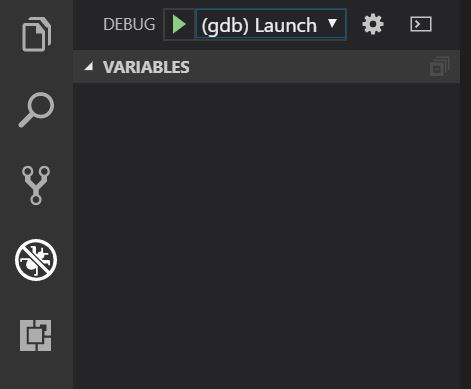

简介
VSCode是一个轻量级，开源和流行的编辑器，支持主流编程语言。 当然，也支持C语言。
在使用之前只需要做一些配置。
步骤
在VSCode中安装Microsoft提供的C / C ++支持插件

安装 MingGW 并执行下列操作:
打开MingGW勾选下列必须组件:
gdb-gcc(bin), gdb-gcc-g++(bin),
然后点击顶端菜单左上角 Installation > Apply Changes 进行安装
配置系统环境变量, 将MingGW安装目录下bin文件夹的完整路径(例如：C:\MinGW\bin)添加到 系统变量的path 一项
重启VSCode
使用VSCode打开一个文件夹。 编写一个简单的C程序（如打印“HelloWorld！”）并将其保存为.c文件。 单击 Debug 图标，在选项卡的下拉菜单中选择 C ++（GDB），然后单击齿轮图标 。VSCode将自动在当前目录中新建.vscode文件夹并在其中生成 launch.json 启动配置文件。

注意：VSCode调试需要在打开的文件夹中完成（即首先应该用VSCode打开经过上述过程配置的文件夹，再调试其中的程序。打开一个独立的 C 程序会因为缺少.vscode目录即其中的配置文件而无法调试。这与DevCpp、C-Free等可以调试单个 C 程序不同）
打开目录下 .vscode文件夹 中自动生成的 launch.json 文件, 然后清空，用一下代码代替，保存:
1
2
3
4
5
6
7
8
9
10
11
12
13
14
15
16
17
18
19
20
21
22
23
24
25
26{
"version": "0.2.0",
"configurations": [
{
"name": "(gdb) Launch",
"type": "cppdbg",
"request": "launch",
"program": "${workspaceRoot}/${fileBasenameNoExtension}.exe",
"args": [],
"stopAtEntry": false,
"cwd": "${workspaceRoot}",
"environment": [],
"externalConsole": true,
"MIMode": "gdb",
"miDebuggerPath": "C:\\MinGW\\bin\\gdb.exe", // The path of the miDebugger, note that it corresponds to the path of MinGw
"preLaunchTask": "gcc", // C++:g++, C:gcc
"setupCommands": [
{
"description": "Enable pretty-printing for gdb",
"text": "-enable-pretty-printing",
"ignoreFailures": true
}
]
}
]
}转到刚才编写的C程序, 按 F5 进行调试，然后将出现一个消息框警告你配置任务。 单击 Debug Anyway。

从下拉菜单中选择: Create from a blank template > Others. 然后VSCode将生成一个 Tasks.json 配置文件在 .vscode 目录中.

打开 Tasks.json 文件，清空，用以下代码替换，保存:
1
2
3
4
5
6
7
8
9
10
11
12
13
14
15
16
17
18
19
20
21
22
23
24
25{
"version": "2.0.0",
"command": "gcc",
"args": [
"-g",
"${file}",
"-o",
"${fileBasenameNoExtension}.exe"
],
"problemMatcher": {
"owner": "cpp",
"fileLocation": [
"relative",
"${workspaceRoot}"
],
"pattern": {
"regexp": "^(.*):(\\d+):(\\d+):\\s+(warning|error):\\s+(.*)$",
"file": 1,
"line": 2,
"column": 3,
"severity": 4,
"message": 5
}
}
}


提示
- 由于需要为每个文件夹单独配置，因此建议将. vscode 文件夹 放在工作目录的根目录，这样就不需要逐一配置。
- 建议备份 .vscode文件夹（其中包含您刚刚修改的配置文件），这样当您在新路径中时，您只需将备份.vscode文件夹复制到该目录即可快速开始工作。